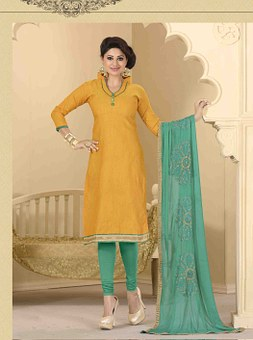

Clothing in India varies depending on the different ethnicity, geography, climate and cultural traditions of the people in each region of India. Historically, male and female clothing has evolved from simple langotas,and loincloths to cover the body to elaborate costumes not only used in daily wear but also on festive occasions as well as rituals and dance performances. In urban areas, western clothing is common and uniformly worn by people of all social levels. India also has a great diversity in terms of weaves, fibers, colors and material of clothing. Color codes are followed in clothing based on the religion and ritual concerned. For instance, Hindu ladies wear white clothes to indicate mourning, while Parsis and Christians wear white to weddings. The clothing in India also encompasses the wide variety of Indian embroidery.
Sari- A sari or saree is a female garment in the Indian subcontinent. A sari is a strip of unstitched cloth, ranging from four to nine meters in length, that is draped over the body in various styles. These include: Sambalpuri Saree from East, Mysore silk and Ilkal of Karnataka and, Kanchipuram of Tamil Nadu from the south, Paithani from West and Banarasi from North among others. The most common style is for the sari to be wrapped around the waist, with one end then draped over the shoulder baring the midriff.The sari is usually worn over a blouse(top) and a petticoat(bottom). Teenage girls wear half-sarees, a three piece set consisting of a langa, a choli and a stole wrapped over it like a saree. Women usually wear full sarees. Indian wedding saris are typically red or pink, a tradition that goes back to India's pre-modern history.

Salwar Kameez- The salwar kameez is the traditional wear of women in Punjab, Haryana and Himachal Pradesh, it's called the Punjabi suit which is most common in the northwestern part of India (Punjab region). The Punjabi suit also includes the "churidaar" and "kurta" ensemble which is also popular in Southern India where it is known as the "churidaar". The salwar kameez has become the most popular dress for females. It consists of loose trousers(the salwar) narrow at the ankles, topped by a tunic top(the kameez). Women generally wear a dupatta or odani (Veil) with salwar kameez to cover their head and shoulders. It is always worn with a scarf called a dupatta, which is used to cover the head and drawn over the bosom.
For men, traditional clothes are the Achkan/Sherwani, Bandhgala, Lungi, Kurta, Angarkha, Jama and Dhoti or Pajama. Recently Pants and shirts have been accepted as traditional Indian dress by the Government of India.
Indian men wearing traditional dress in the country today is hardly seen. Only during special occasions like weddings or festivals will you be able to see them in traditional Indian dress.
The traditional dress for Indian men essentially is Dhoti paired with Kurta and Gandhi Ttopi or Oagri. Dhoti is a six feet unstitched garment worn in a particular style which gives the pant effect rather than a skirt effect!
It is paired with a stitched upper garment called Kurta which is normally longer than a shirt with two slits on each side. A traditional Indian man dress is incomplete without a head dress.
A Nehru topi(cap) or a petah/pagri(turban) accompanies depending on the culture and or religion.